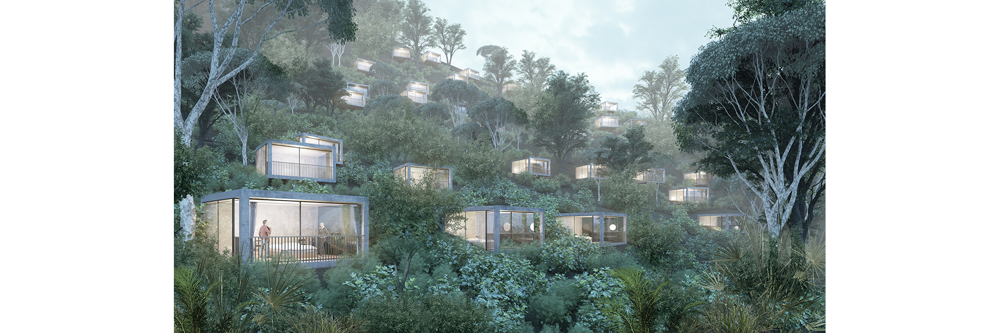
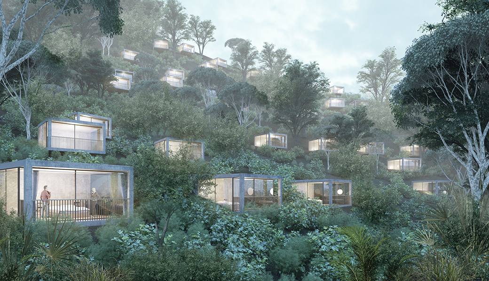
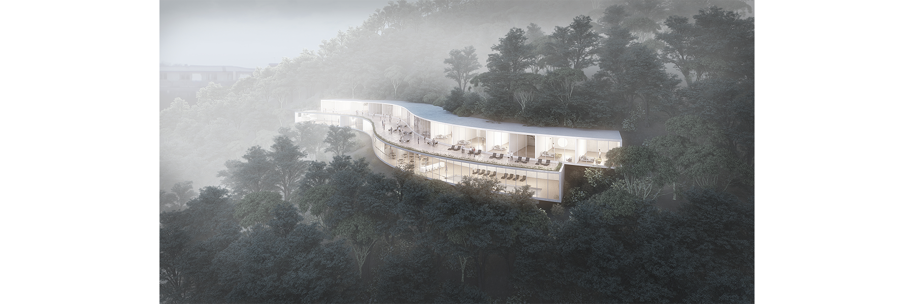
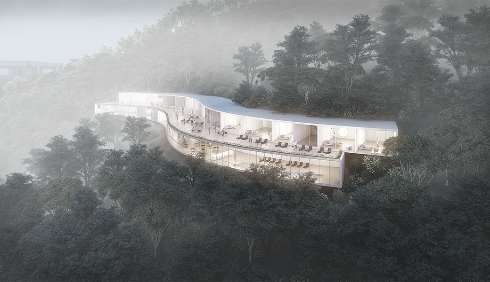
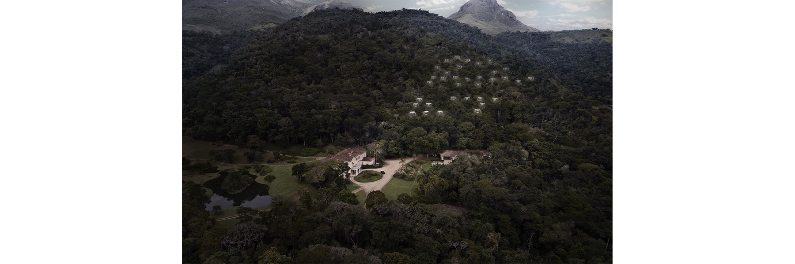
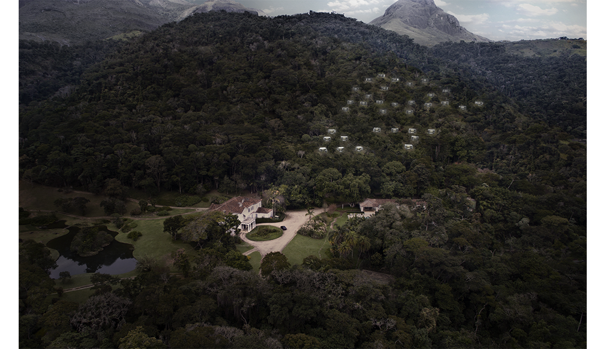
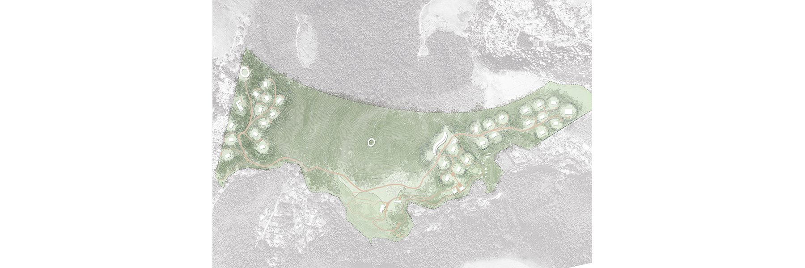
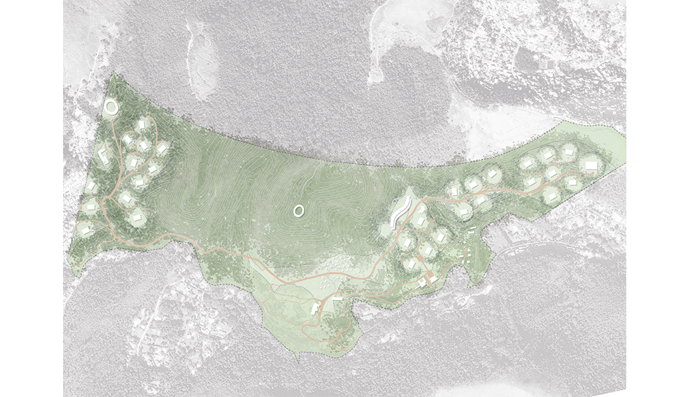
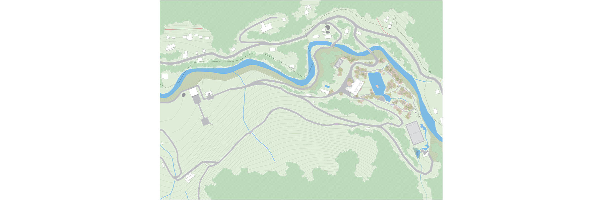
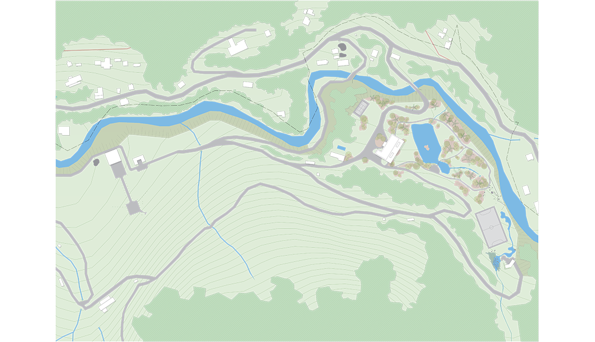
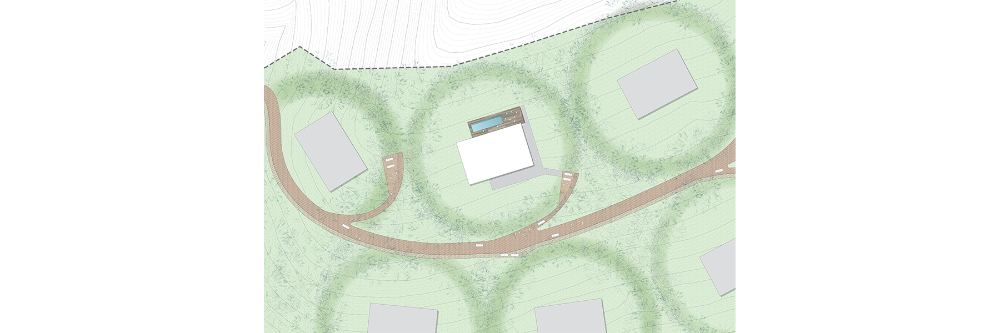
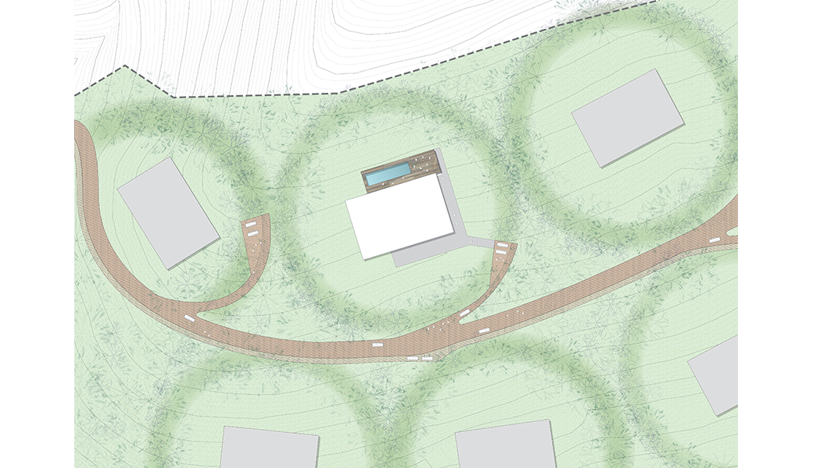
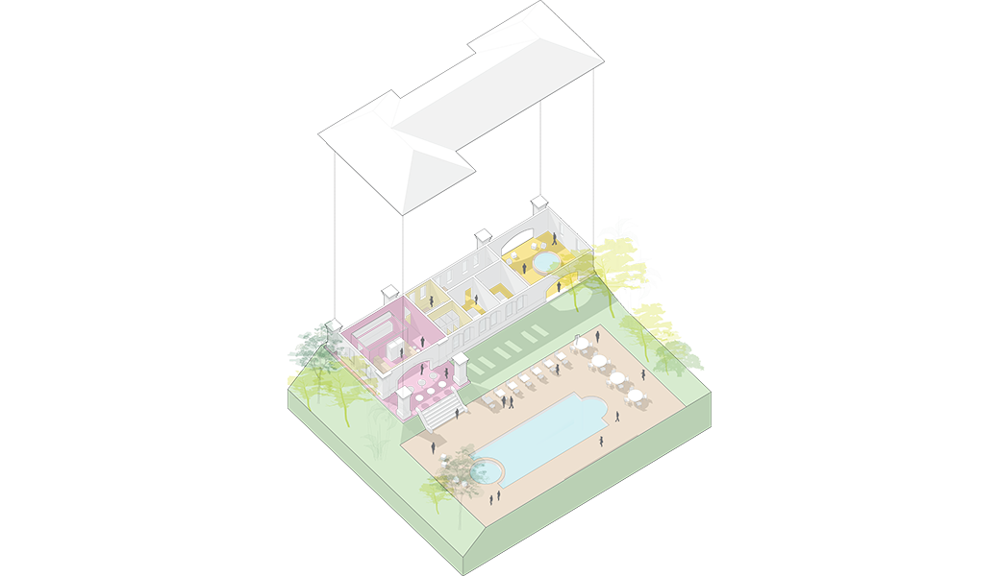
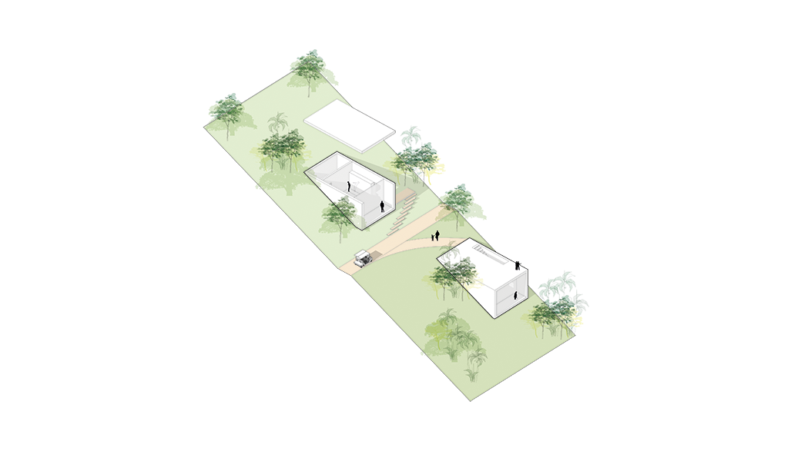
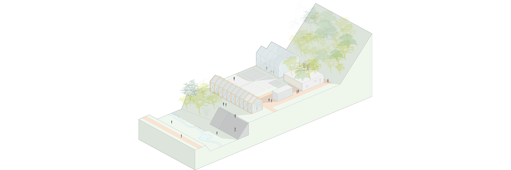
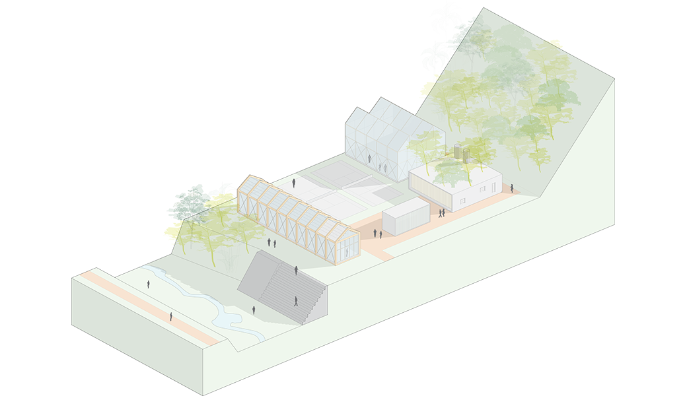
The Marambaia Farm, as it is called, is a place of extensive history. First owned by the parish, it housed D. Pedro I during his passage through Rio de Janeiro. Later, inherited by an arts patron, it became the site of the first garden designed by Burle Marx, which is preserved to this day.
This work features a small lake, idyllic walks, waterfalls, pavilions, and murals, occupying a considerable portion of the farm. Even larger, however, was the territory that should be destined for preservation, given that, near the Serra dos Órgãos, where the farm is located, there is a plenitude of streams, rivers, and springs, determining non-buildable strips throughout the land.
In these delicate conditions, we should install a condominium and a hotel, as well as an inn, a retirement home, sports activities, and a lookout point, overcoming even huge variations in terrain level.